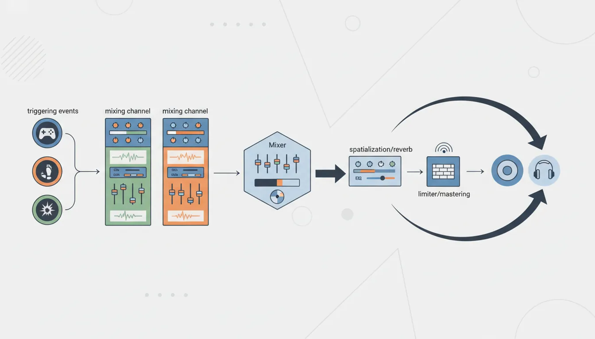
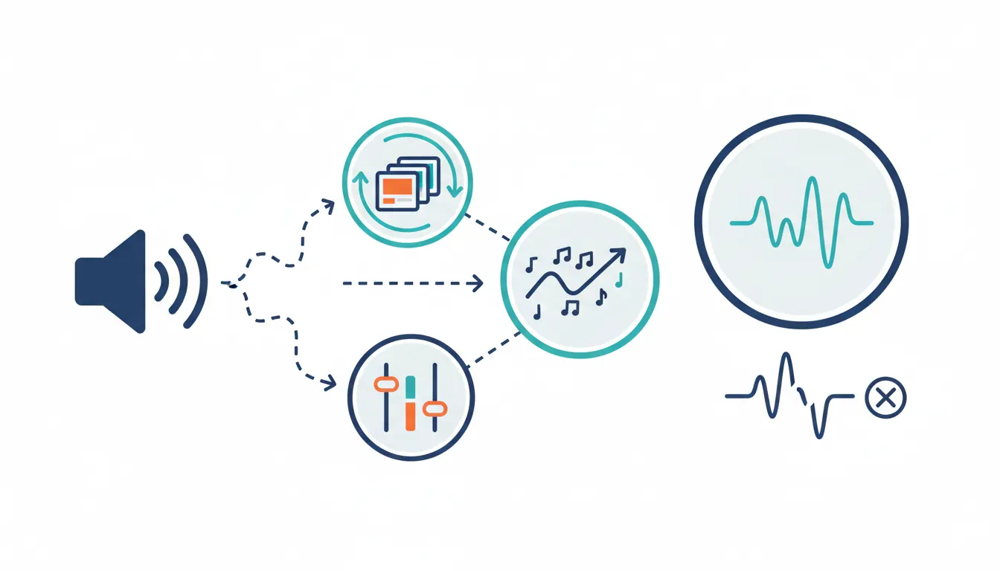
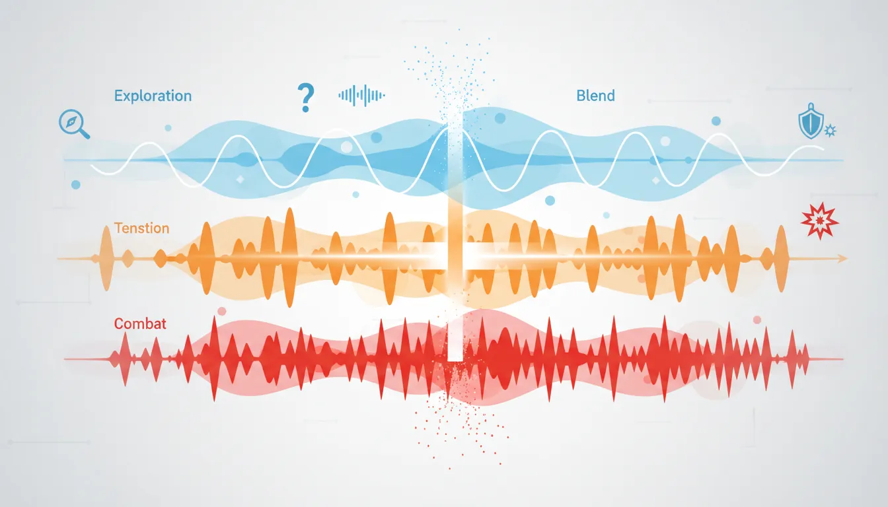
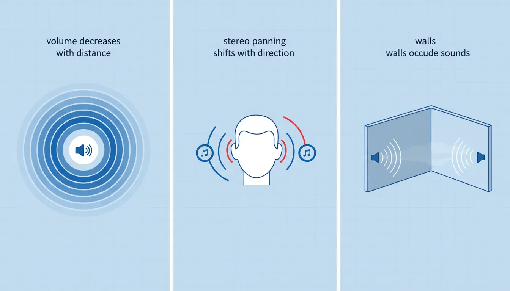
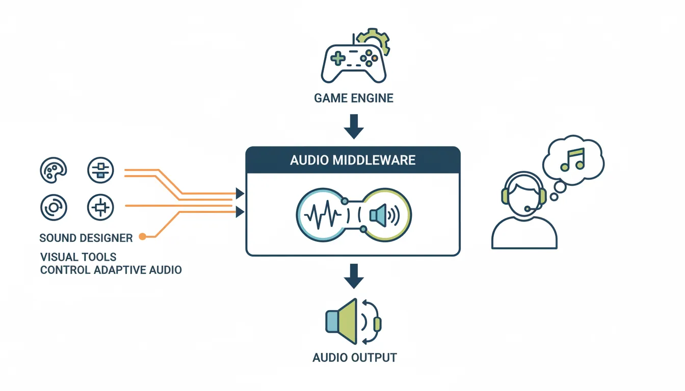

Game Development
Introduction to Game Development
Industry overview, roles, game design pipelineChoosing a Game Engine
Unity, Unreal, Godot, engine comparison, tradeoffsProgramming Basics for Games
Game loops, input handling, state machines, OOP2D Game Development
Sprites, tilemaps, platformers, 2D physics, animation3D Game Development
Meshes, materials, lighting, cameras, 3D mathPhysics & Collision Systems
Rigidbodies, colliders, raycasting, physics enginesAudio & Sound Design
Sound effects, music, spatial audio, audio middlewarePublishing Your Game
Store submission, marketing, monetization, launch strategyGame Design Fundamentals
Mechanics, dynamics, aesthetics, level design, balancingAI in Games
Pathfinding, behavior trees, state machines, NPC intelligenceMultiplayer & Networking
Client-server, peer-to-peer, netcode, synchronizationProfessional Game Dev Workflow
Version control, CI/CD, QA testing, agile for gamesBuilding a Portfolio
Showcasing projects, demo reels, job applications, indie devAudio Fundamentals
Audio is often called the "invisible 50%" of game experience. Great audio makes players feel emotions, understand game states, and become immersed. Poor audio breaks immersion instantly.

Why Audio Matters
The Emotional Impact of Audio:
Game Moment Without Audio With Audio
─────────────────────────────────────────────────────────────────
Boss appears "Oh, there it is" "OH NO, RUN!"
Found a secret *nothing* *magical chime* 😊
Low health See red screen *heartbeat* TENSION
Victory! UI popup *triumphant fanfare* 🎉
Horror game Just visuals *creaking, whispers* 😱
Audio communicates:
• Feedback (action confirmed)
• State (health, danger, safety)
• Emotion (joy, fear, triumph)
• Space (cave echo, outdoor wind)
• Story (voice acting, narrative cues)Audio Concepts
| Concept | Description | Example |
|---|---|---|
| Sample Rate | Samples per second (Hz) | 44100 Hz (CD quality), 48000 Hz (game standard) |
| Bit Depth | Dynamic range resolution | 16-bit (CD), 24-bit (professional) |
| Channels | Audio output paths | Mono (1), Stereo (2), 5.1 (6), 7.1 (8) |
| Compression | File size reduction | WAV (lossless), OGG/MP3 (lossy but smaller) |
Audio in Game Engines
// Unity Audio Basics
public class AudioBasics : MonoBehaviour
{
// AudioSource: The speaker that plays sound
// AudioClip: The sound file itself
// AudioListener: The player's ears (usually on camera)
public AudioClip jumpSound;
public AudioClip[] footstepSounds; // Variety!
private AudioSource audioSource;
void Start()
{
audioSource = GetComponent<AudioSource>();
}
// Play a single sound
public void PlayJump()
{
audioSource.PlayOneShot(jumpSound);
}
// Play random footstep (variety prevents repetition fatigue)
public void PlayFootstep()
{
int randomIndex = Random.Range(0, footstepSounds.Length);
audioSource.PlayOneShot(footstepSounds[randomIndex]);
}
// Play sound at specific location (3D sound)
public void PlayExplosion(Vector3 position)
{
AudioSource.PlayClipAtPoint(explosionClip, position);
}
}Sound Effects
Sound effects (SFX) provide immediate feedback for player actions and game events. They must be responsive, satisfying, and clear.

SFX Categories
Sound Effect Categories:
Player Feedback: Environment:
├── Movement ├── Ambience loops
│ ├── Footsteps │ ├── Wind, rain, fire
│ ├── Jumping │ ├── Cave drips
│ └── Landing │ └── Crowd murmur
├── Combat ├── Interactive
│ ├── Attack swings │ ├── Doors opening
│ ├── Hits/impacts │ ├── Switches clicking
│ └── Weapon equip │ └── Chests opening
└── Abilities └── Destructibles
├── Cast sound ├── Glass breaking
├── Active loop ├── Wood splintering
└── Impact └── Explosion debris
UI/Feedback: Creatures/NPCs:
├── Menu navigation ├── Idle sounds
├── Item pickup ├── Alert/aggro
├── Achievement unlock ├── Attack vocalizations
└── Error/invalid action └── Death soundsSound Variation System
// Advanced SFX System with Variation
[System.Serializable]
public class SoundEffect
{
public AudioClip[] clips; // Multiple variations
[Range(0f, 1f)] public float volume = 1f;
[Range(0.1f, 3f)] public float pitchMin = 0.95f;
[Range(0.1f, 3f)] public float pitchMax = 1.05f;
private int lastClipIndex = -1;
public void Play(AudioSource source)
{
if (clips.Length == 0) return;
// Pick random clip (but not the same as last time)
int index;
do {
index = Random.Range(0, clips.Length);
} while (index == lastClipIndex && clips.Length > 1);
lastClipIndex = index;
// Random pitch for even more variation
source.pitch = Random.Range(pitchMin, pitchMax);
source.PlayOneShot(clips[index], volume);
}
}
public class SFXManager : MonoBehaviour
{
public static SFXManager Instance;
[Header("Player Sounds")]
public SoundEffect footstepDirt;
public SoundEffect footstepMetal;
public SoundEffect footstepWood;
public SoundEffect jump;
public SoundEffect land;
[Header("Combat")]
public SoundEffect swordSwing;
public SoundEffect swordHit;
public SoundEffect arrowFire;
public SoundEffect arrowImpact;
[Header("UI")]
public SoundEffect buttonClick;
public SoundEffect itemPickup;
public SoundEffect error;
private AudioSource audioSource;
void Awake()
{
Instance = this;
audioSource = GetComponent<AudioSource>();
}
public void PlayFootstep(GroundType type)
{
switch (type)
{
case GroundType.Dirt: footstepDirt.Play(audioSource); break;
case GroundType.Metal: footstepMetal.Play(audioSource); break;
case GroundType.Wood: footstepWood.Play(audioSource); break;
}
}
}Music & Ambience
Music sets emotional tone and pacing. Ambience creates a sense of place. Both should respond dynamically to gameplay.

Adaptive Music Systems
Music Layers (Horizontal Re-sequencing):
Exploration Mode: Combat Detected: Boss Fight:
┌─────────────────┐ ┌─────────────────┐ ┌─────────────────┐
│ 🎵 Soft pads │ │ 🎵 Soft pads │ │ 🎵 Epic brass │
│ 🎸 Light melody│ → │ 🥁 Drums added │ → │ 🥁 FULL drums │
│ │ │ 🎸 Tense melody│ │ 🎻 Full orch. │
└─────────────────┘ └─────────────────┘ └─────────────────┘
Vertical Layering (adding/removing instruments):
Layer 4: Combat percussion ─────────────────── [ON in combat]
Layer 3: Tension strings ─────────────────── [ON near enemies]
Layer 2: Melody ─────────────────── [ON exploring]
Layer 1: Ambient pads ─────────────────── [ALWAYS ON]
────────────────────────────────────────────────
Safe Near danger Combat// Simple Adaptive Music Manager
public class MusicManager : MonoBehaviour
{
public static MusicManager Instance;
[Header("Music Layers")]
public AudioSource ambientLayer; // Always plays
public AudioSource melodyLayer; // Exploration
public AudioSource tensionLayer; // Near enemies
public AudioSource combatLayer; // In combat
private MusicState currentState = MusicState.Exploration;
private float transitionSpeed = 2f;
void Update()
{
// Smooth volume transitions
float ambientTarget = 1f; // Always on
float melodyTarget = (currentState == MusicState.Exploration) ? 1f : 0f;
float tensionTarget = (currentState == MusicState.Tension) ? 1f : 0f;
float combatTarget = (currentState == MusicState.Combat) ? 1f : 0f;
ambientLayer.volume = Mathf.MoveTowards(ambientLayer.volume, ambientTarget, transitionSpeed * Time.deltaTime);
melodyLayer.volume = Mathf.MoveTowards(melodyLayer.volume, melodyTarget, transitionSpeed * Time.deltaTime);
tensionLayer.volume = Mathf.MoveTowards(tensionLayer.volume, tensionTarget, transitionSpeed * Time.deltaTime);
combatLayer.volume = Mathf.MoveTowards(combatLayer.volume, combatTarget, transitionSpeed * Time.deltaTime);
}
public void SetMusicState(MusicState newState)
{
currentState = newState;
}
}
public enum MusicState { Exploration, Tension, Combat, Boss }Ambient Sound Design
Ambience Zones:
Forest Zone: Cave Zone:
├── Base loop: Forest ambience ├── Base loop: Cave reverb
├── Random: Bird chirps ├── Random: Water drips
├── Random: Rustling leaves ├── Random: Distant rumble
├── Wind gusts (weather) ├── Echo effect on sounds
└── Day/night variations └── Darker = more intense
City Zone: Combat Zone:
├── Base loop: Crowd murmur ├── Increase tension layer
├── Random: Footsteps passing ├── Add battle drums
├── Random: Vendor calls ├── Lower ambience volume
├── Random: Cart wheels ├── Play combat stingers
└── Time-of-day changes └── Victory/defeat musicSpatial Audio
Spatial audio (3D sound) makes audio come from specific locations in the game world, creating immersion and providing gameplay information.

3D Audio Properties:
Distance Attenuation: Stereo Panning:
Sound ● Enemy on left:
╲ 🎧
╲ Volume decreases ◀ ▓░░ ▶
╲ with distance L R
╲
╲ Sound louder in left ear
●──────●
│ │
Near│ Far │ Doppler Effect:
LOUD│ quiet│ 🏎️ ───────→
Approaching: Higher pitch
Passing: Pitch drops
Example: Racing car whoosh// 3D Audio Setup
public class SpatialAudio : MonoBehaviour
{
void Start()
{
AudioSource source = GetComponent<AudioSource>();
// Enable 3D sound
source.spatialBlend = 1f; // 0 = 2D, 1 = full 3D
// Distance settings
source.minDistance = 1f; // Full volume within this
source.maxDistance = 50f; // Inaudible beyond this
source.rolloffMode = AudioRolloffMode.Logarithmic;
// Doppler (pitch shift for moving sources)
source.dopplerLevel = 1f; // 0 = off, 1 = realistic
// Spread: How wide the sound feels
source.spread = 0f; // 0 = point source, 360 = omnidirectional
}
}
// Audio Zones with Reverb
public class AudioZone : MonoBehaviour
{
public AudioReverbPreset reverbPreset;
void OnTriggerEnter(Collider other)
{
if (other.CompareTag("Player"))
{
// Switch reverb when entering cave/room
AudioReverbFilter reverb = Camera.main.GetComponent<AudioReverbFilter>();
reverb.reverbPreset = reverbPreset;
}
}
}
// Occlusion: Sounds muffled through walls
public class AudioOcclusion : MonoBehaviour
{
public Transform listener;
private AudioLowPassFilter lowPass;
private AudioSource source;
void Start()
{
lowPass = GetComponent<AudioLowPassFilter>();
source = GetComponent<AudioSource>();
}
void Update()
{
// Raycast to listener
Vector3 direction = listener.position - transform.position;
if (Physics.Raycast(transform.position, direction, direction.magnitude, wallLayer))
{
// Wall in the way - muffle the sound
lowPass.cutoffFrequency = 500f; // Very muffled
source.volume = 0.5f;
}
else
{
// Clear line of sight
lowPass.cutoffFrequency = 22000f; // No filter
source.volume = 1f;
}
}
}Audio Middleware (FMOD/Wwise)
Audio middleware provides advanced tools for sound designers, separating audio logic from game code. Industry standards include FMOD and Wwise.

Middleware Comparison
| Feature | Built-in Engine Audio | FMOD | Wwise |
|---|---|---|---|
| Cost | Free (included) | Free under $200K revenue | Free for indie (limited sounds) |
| Learning Curve | Easy | Moderate | Steep |
| Adaptive Music | Manual scripting | Visual tool | Visual tool |
| Used By | Small indie games | Many indie & AA games | AAA studios |
// FMOD Integration Example
using FMODUnity;
public class FMODExample : MonoBehaviour
{
// Event reference (set in inspector)
[SerializeField] private EventReference footstepEvent;
[SerializeField] private EventReference musicEvent;
private FMOD.Studio.EventInstance musicInstance;
void Start()
{
// Start music
musicInstance = RuntimeManager.CreateInstance(musicEvent);
musicInstance.start();
}
public void PlayFootstep(string surfaceType)
{
// One-shot sound with parameter
FMOD.Studio.EventInstance footstep = RuntimeManager.CreateInstance(footstepEvent);
// Set parameter (surface type affects sound)
footstep.setParameterByName("Surface", GetSurfaceValue(surfaceType));
footstep.set3DAttributes(RuntimeUtils.To3DAttributes(transform));
footstep.start();
footstep.release(); // Auto-cleanup after playing
}
public void SetCombatIntensity(float intensity)
{
// Blend music layers based on combat intensity
musicInstance.setParameterByName("CombatIntensity", intensity);
}
}Audio Optimization
Audio can consume significant memory and CPU. Optimization ensures smooth performance across all platforms.
Compression Settings
Audio Format Guidelines:
Type Format Compression Load Type Notes
───────────────────────────────────────────────────────────────────
Music OGG/MP3 High Streaming Large files
Ambience loops OGG Medium Streaming Long loops
One-shot SFX WAV/OGG Low/None Compressed Frequent play
UI sounds WAV None Decompress Instant response
Voice/Dialog OGG Medium Streaming Many files
Load Types:
• Decompress on Load: Fast playback, uses more RAM
• Compressed in Memory: Lower RAM, slight CPU cost
• Streaming: Minimal RAM, best for music/ambientAudio Pooling
// Audio Source Pooling (avoid Instantiate/Destroy)
public class AudioPool : MonoBehaviour
{
public static AudioPool Instance;
[SerializeField] private int poolSize = 20;
private Queue<AudioSource> availableSources = new Queue<AudioSource>();
void Awake()
{
Instance = this;
// Pre-create audio sources
for (int i = 0; i < poolSize; i++)
{
GameObject obj = new GameObject("PooledAudio_" + i);
obj.transform.parent = transform;
AudioSource source = obj.AddComponent<AudioSource>();
source.playOnAwake = false;
availableSources.Enqueue(source);
}
}
public void PlayAt(AudioClip clip, Vector3 position, float volume = 1f)
{
if (availableSources.Count == 0)
{
Debug.LogWarning("Audio pool exhausted!");
return;
}
AudioSource source = availableSources.Dequeue();
source.transform.position = position;
source.clip = clip;
source.volume = volume;
source.spatialBlend = 1f;
source.Play();
StartCoroutine(ReturnToPool(source, clip.length));
}
private IEnumerator ReturnToPool(AudioSource source, float delay)
{
yield return new WaitForSeconds(delay + 0.1f);
source.Stop();
availableSources.Enqueue(source);
}
}Exercise: Build an Audio System
Goal: Create a complete audio system for a small game level.
- Set up an SFX manager with variation (3+ footstep sounds per surface)
- Create an ambient zone with base loop + random one-shots
- Implement simple adaptive music (exploration vs combat layers)
- Add 3D positioned sounds (torch crackle, water fountain)
- Create audio occlusion for sounds behind walls
- Build an audio settings menu (master, music, SFX volumes)
Bonus: Integrate FMOD Studio for one adaptive music event